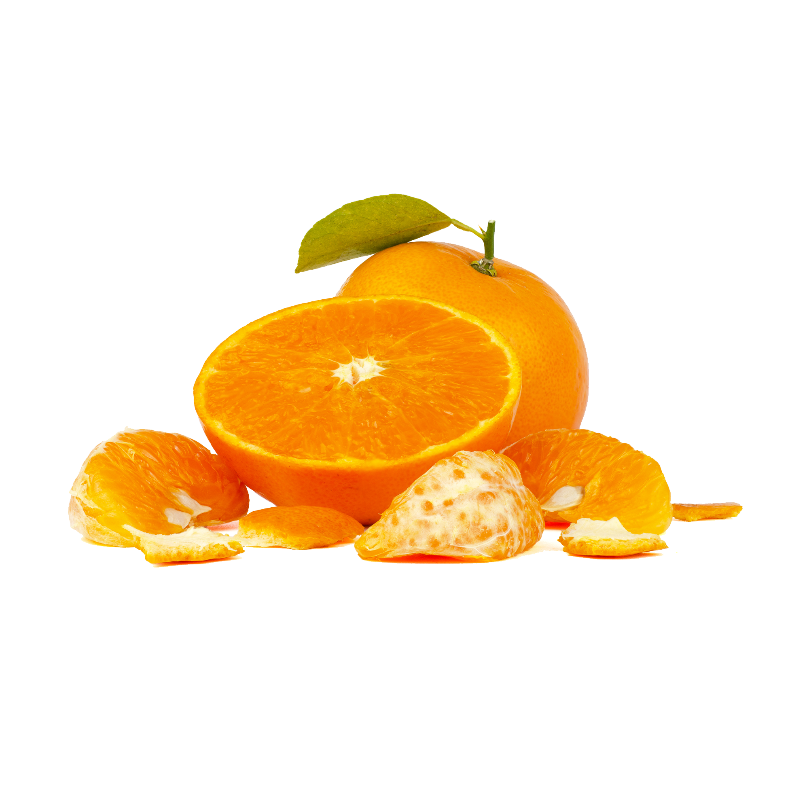
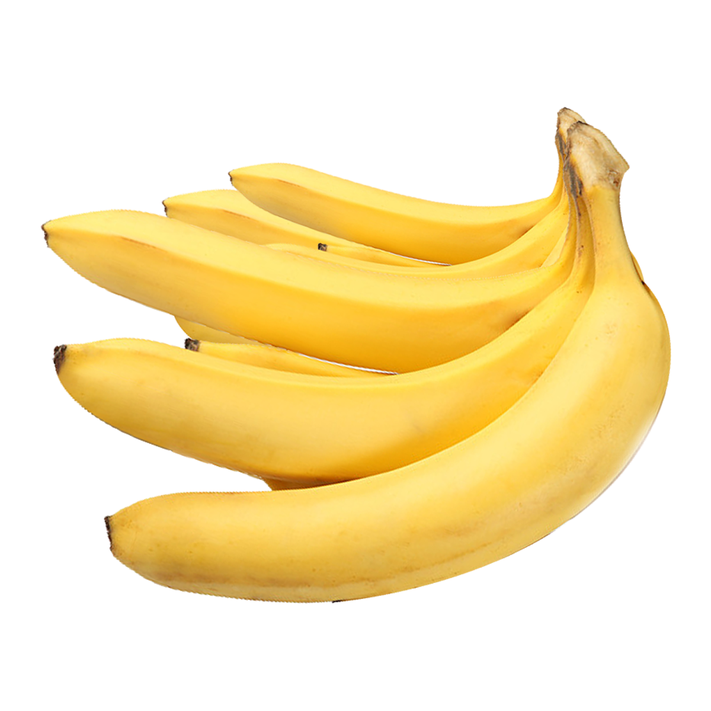
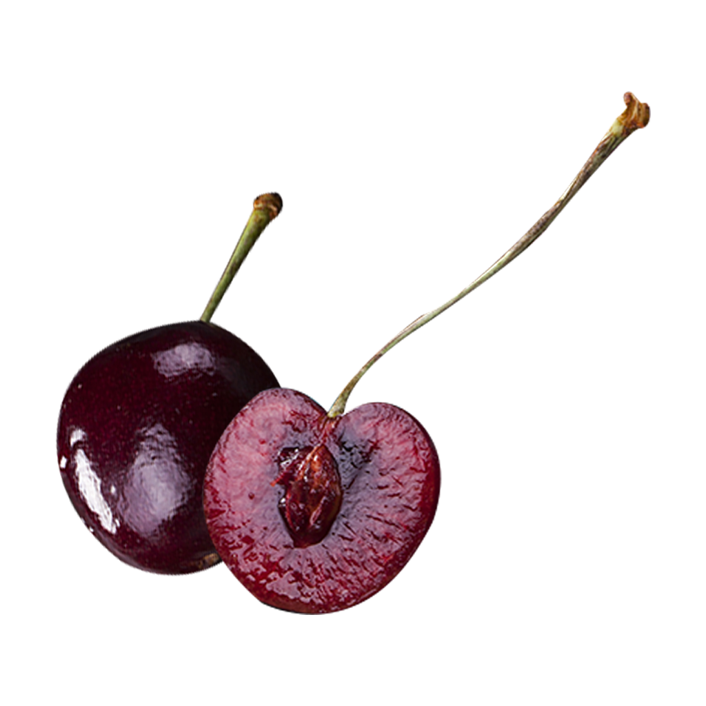

Mandarynka
Mandarynka – gatunek rośliny wieloletniej z rodziny rutowatych. Prawdopodobnie pochodzi z Azji Południowej, jest uprawiana w wielu rejonach świata o klimacie tropikalnym i subtropikalnym.
Czytaj więcejMandarynka – gatunek rośliny wieloletniej z rodziny rutowatych. Prawdopodobnie pochodzi z Azji Południowej, jest uprawiana w wielu rejonach świata o klimacie tropikalnym i subtropikalnym.
Czytaj więcej
Pomarańcza chińska, pomarańcza słodka – gatunek rośliny wieloletniej z rodziny rutowatych. Pochodzenie nie jest znane, przypuszczalnie pochodzi z Chin.
Czytaj więcejCytryna zwyczajna, nazywana też cytryną właściwą lub po prostu cytryną – gatunek roślin z rodziny rutowatych. Pochodzi z południowo-wschodnich Chin, lecz współcześnie nie występuje tam ani w stanie dzikim, ani nie jest tam uprawiana. Prawdopodobnie powstała w wyniku skrzyżowania limy z cytronem. Do Europy trafiła w średniowieczu (starożytni Rzymianie znali i uprawiali tylko cytrony.)
Czytaj więcejJabłko
Banan
Wiśnia